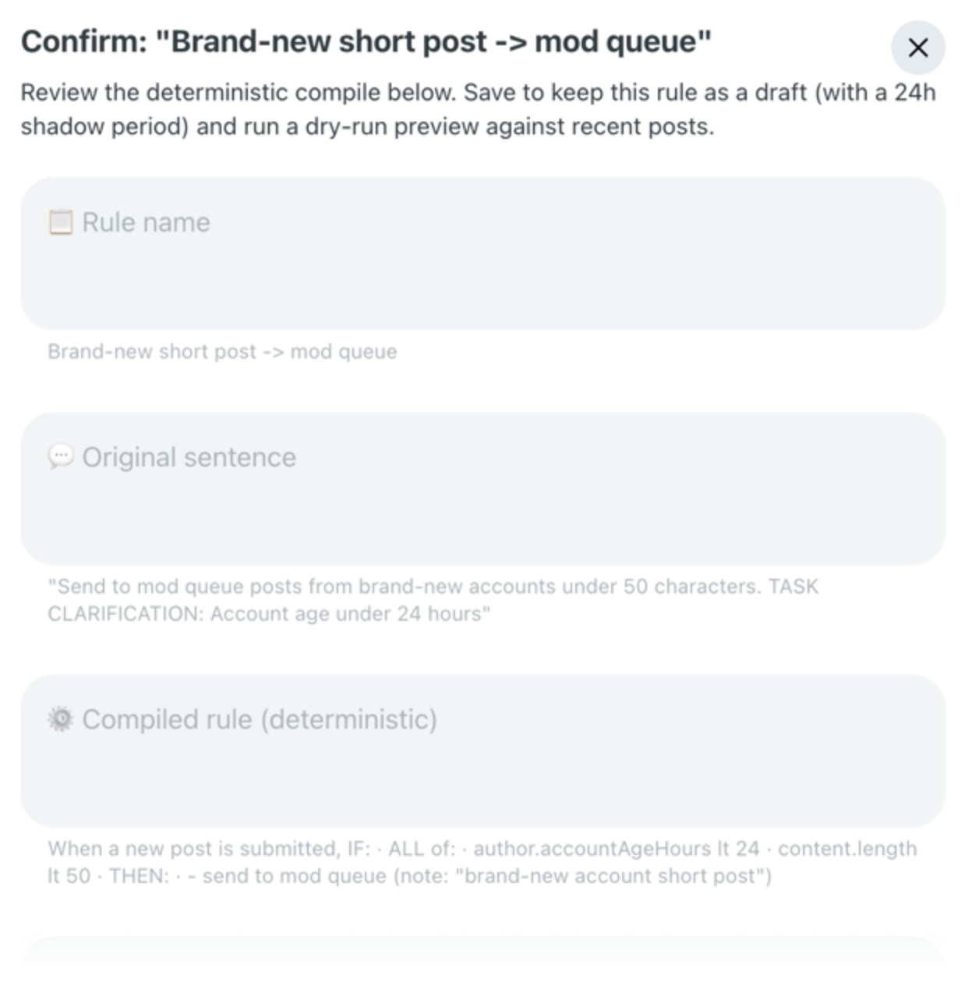
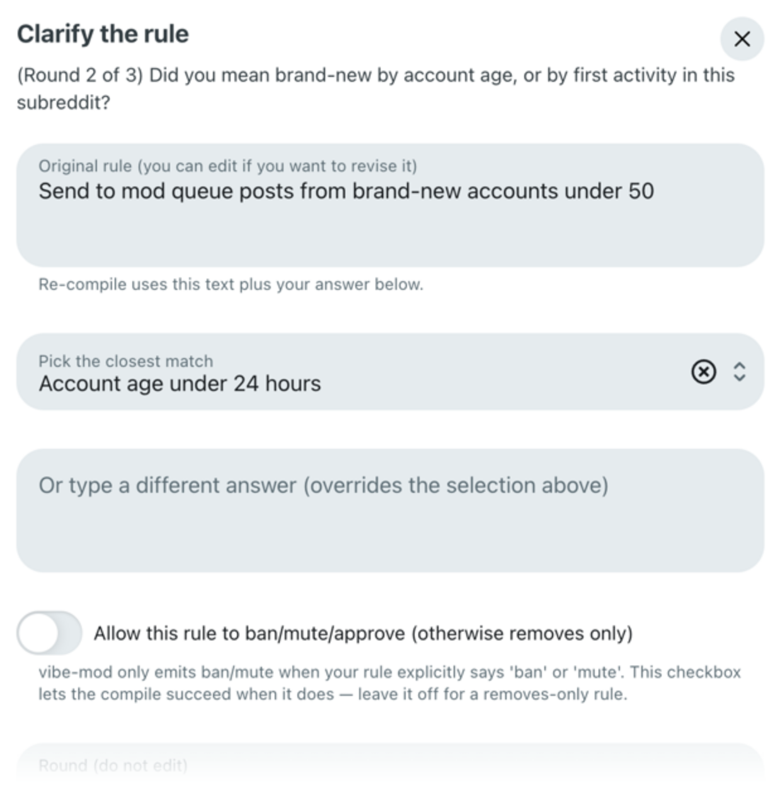
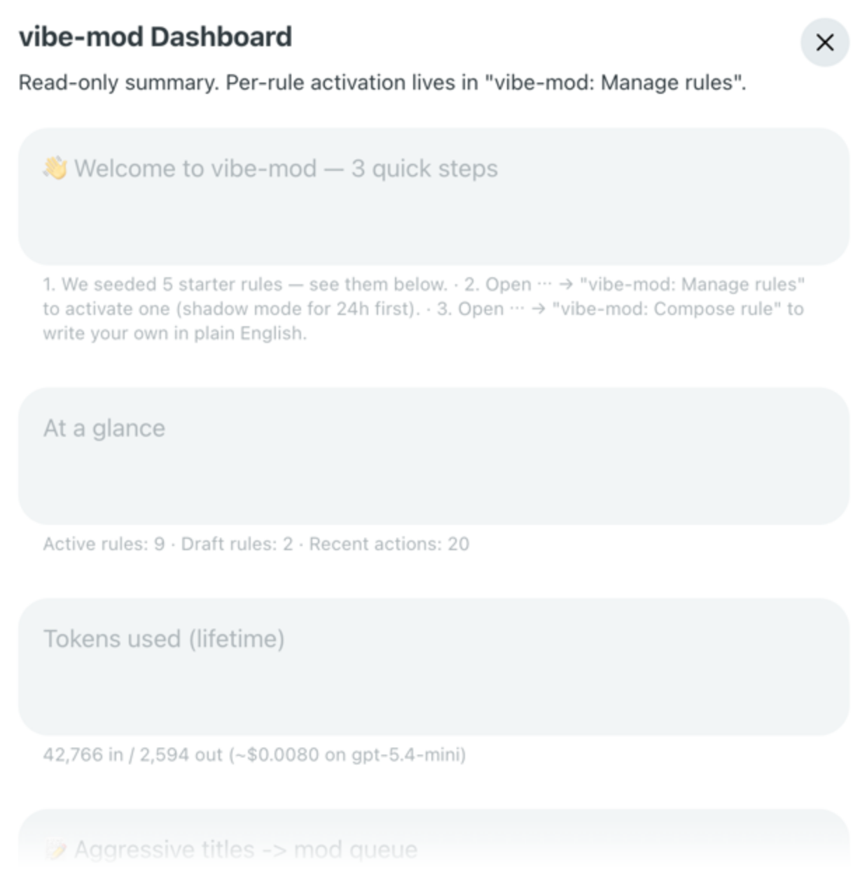

AutoModerator YAML · regex
Powerful, but you hand-write YAML and regex. It’s technical, fiddly, and easy to get subtly wrong — and there’s no preview. You find out it misfired after it has already actioned real posts.
Reddit moderation, compiled
You shouldn’t have to learn YAML to keep your subreddit clean — or hand it to a black-box bot. vibe-mod turns a sentence into a deterministic, auditable, reversible rule you can read before it runs.
Free for mods. One-click install · works on any subreddit you moderate.
You write
“Send brand-new accounts’ short posts to the mod queue.”
It runs
Moderating a subreddit means writing rules. Today a mod has two bad options.
Moderators want to say what they mean, in their own words — and trust exactly what will happen.
— what mods actually ask for
Type the rule the way you’d explain it to a co-mod. No config language to learn.
If a rule is ambiguous, vibe-mod asks and lets you choose — it never decides silently.
The exact logic, rendered back in readable English with its token cost. You approve it before it runs.
At runtime the rule is pure, deterministic TypeScript. No LLM in the loop — fast, consistent, cheap.
Every rule starts in a dry-run preview and a 24-hour shadow window before it can act.
Every action is logged and has 30-day, one-click undo.
And it reacts to mod actions too — apply the Spam flair to a post and vibe-mod instantly removes and locks it, deterministically.
01 Write
Describe the behaviour you want, exactly how you’d say it out loud. No syntax, no escaping, no regex reference open in another tab.
You type“Send brand-new accounts’ short posts to the mod queue.”
02 Clarify & Confirm
“Brand-new” could mean an hour old or a month old — so vibe-mod asks instead of guessing. You pick the threshold; it compiles your answer into deterministic logic, rendered back in English with the exact token cost, for you to approve.
This edit-time question is the only place AI runs. Once you approve, the rule is plain deterministic code — 0 AI calls per post.
It compiles toauthor.accountAgeHours lt 24 → modqueue
03 Preview → Activate
See what the rule would have done against recent posts, then activate it per rule. It runs in a 24-hour shadow window by default, and every action is one-click reversible for 30 days.
Lifetime cost on this sub$0.0019 across 6 compiles · 0 AI calls at runtime
A sentence on the left; the deterministic predicate it compiles into on the right.
Real examples, exactly as vibe-mod renders them.
content.length lt 20 → remove
content.title.upperCaseRatio gt 0.7 → modqueue
content.linkCount gt 3 → remove
author.totalKarma lt 50 → set flair
time.hourOfDay gte 2 ∧ lt 6 → modqueue
author.hasVerifiedEmail eq false → modqueue
content.over18 eq true ∧ NOT post.flair nsfw → remove
time.dayOfWeek in [0,6] → lock
author.subJoinAgeHours lt 168 → modqueue
content.isCrosspost eq true → remove
content.nonAsciiRatio gt 0.2 → modqueue
post.flairText matches /(?i)off[- ]topic/ → modqueue
author.flairText eq 'Verified Contributor' → approveguarded
on flairUpdate · post.flairText eq 'Spam' → remove + lock
Mix 34 signals, 9 operators & 9 actions with and / or / not — thousands of possible rules
Every right-hand line is the exact predicate vibe-mod runs — compiled once from your sentence, then deterministic on every post.
| Capability | vibe-mod deterministic | AutoModerator config | Generic AI bot black box |
|---|---|---|---|
| Author rules in | plain English | YAML / regex | plain English |
| Read the final rule | yes — deterministic | yes, if you know YAML | no — black box |
| AI calls per post at runtime | 0 | 0 | 1 — every post |
| Preview before it acts | dry-run + 24h shadow | no | rarely |
| Every action reversible | 30-day 1-click undo | manual | manual |
| Audit log | yes | partial | usually no |
gpt-5.4-mini — on us, never you.